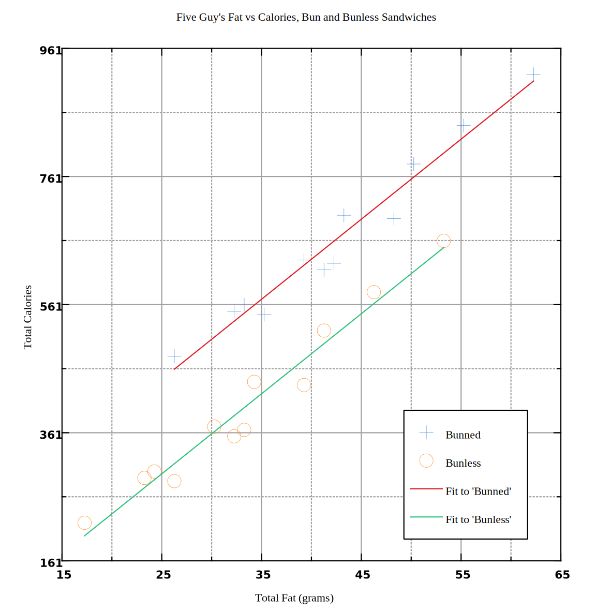

In this project, we explore the gastronomical minefield that is Five Guy’s menu. Charting the heretofore uncharted, we reveal the calorically dense panoply that is Five Guy’s one-stop-shop for cardiologists’ express disapproval. A cursory google says there’s about 9 calories in a gram of fat; given there are carbohydrates and proteins in all of the examined menu items, accounting for the difference, this coincides with our findings.

| Name | Total Fat (grams) | Total Calories |
|---|---|---|
| Hamburger | 43 | 700 |
| Cheeseburger | 55 | 840 |
| Bacon Burger | 50 | 780 |
| Bacon Cheeseburger | 62 | 920 |
| Little Hamburger | 26 | 480 |
| Little Cheeseburger | 32 | 550 |
| Little Bacon Burger | 33 | 560 |
| Little Bacon Cheese Burger | 39 | 630 |
| Hot Dog | 35 | 545 |
| Cheese Dog | 41 | 615 |
| Bacon Dog | 42 | 625 |
| Bacon Cheese Dog | 48 | 695 |
| Name | Total Fat (grams) | Total Calories |
|---|---|---|
| Hamburger | 34 | 440 |
| Cheeseburger | 46 | 580 |
| Bacon Burger | 41 | 520 |
| Bacon Cheeseburger | 53 | 660 |
| Little Hamburger | 17 | 220 |
| Little Cheeseburger | 23 | 290 |
| Little Bacon Burger | 24 | 300 |
| Little Bacon Cheese Burger | 30 | 370 |
| Hot Dog | 26 | 285 |
| Cheese Dog | 32 | 355 |
| Bacon Dog | 33 | 365 |
| Bacon Cheese Dog | 39 | 435 |
Performing a linear regression of the Bunned data set gives a best-fit line:
\[ y = 12.50x + 134.73 \]
\( R = 0.963 \), indicating a very good fit with positive correlation.
Performing a linear regression of the bunless data set gives a best-fit line:
\[ y = 12.50x - 12.80 \]
\( R = 0.981 \), indicating a very good fit with positive correlation.
In both bun and bunless, the slope is \(\approx 12.50\), meaning a gram of fat is about 12.50 calories.
The slope has a unit of \( \frac{Calories}{Grams\ of\ Fat} \).
If a bunned hot dog or burger were to have 40 grams of fat, we could expect it to have about 635 calories.
Best Fit for Bunned:
\[ y = 12.50x + 134.73 \]
Fill in 40 grams of fat:
\[ y = 12.50 \times (40) + 134.73 \]
Solving:
\[ y \approx 635 \]
If a bunless hot dog or burger were to have 30 grams of fat, we could expect it to have about 362 calories.
Best fit for Bunless:
\[ y = 12.50x - 12.80 \]
Fill in 30 grams of fat:
\[ y = 12.50 \times (30) - 12.80 \]
Solving:
\[ y \approx 362 \]
There is a strongly linear, positive correlation between fat content and calories.
Additionally, buns add calories and fat. We can estimate a bun adds roughly 148 calories per sandwich.
I should eat at FiveGuys less.
Plots and data analyses were done using LabPlot 2.10.0, free, open-source, and cross-platform Data Visualization and Analysis software.
This document was composed in Markdown, rendered to HTML using a small program utilizing the gomarkdown1 package. Math formulae are composed in MathJax, compiled to MathML. Page layout and styling was manually done with hand-written CSS.
The final rendering was done with the Google Chrome web browser.